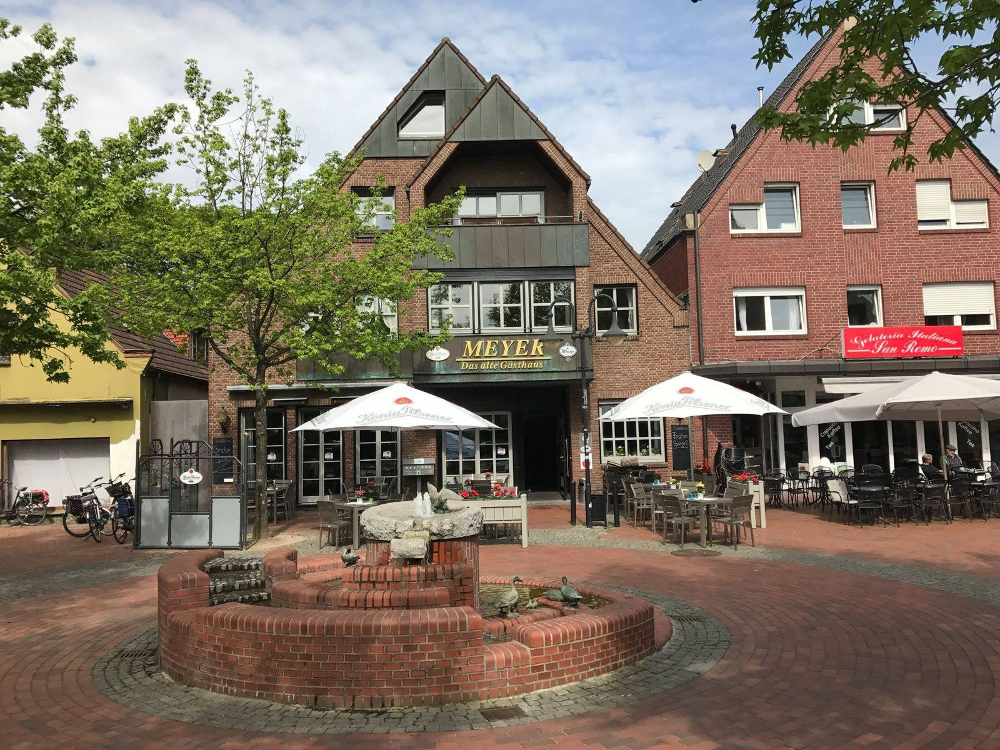
Im Herzen von Epe, mitten in der Fußgängerzone am Brunnen
Seit 1660 eine feste Größe in Epe.
Restaurant mit internationaler Küche und Außenterrasse, Saal bis 180 Personen, Kneipe und Bundeskegelbahnen. Achim Meyer führt das Haus in neunter Generation.
Dienstag bis Sonntag von 16:30 bis 1:00 Uhr geöffnet
Vier Räume unter einem Dach
Ob gemütlich essen, groß feiern, ein Bier an der Theke oder ein Kegelabend mit Freunden: Wir stehen Ihnen freundlich und kompetent zur Seite.
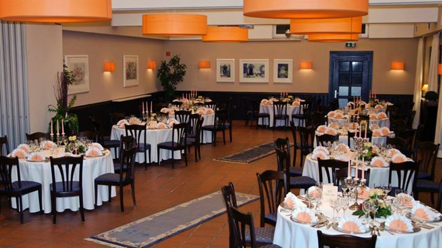
Saal
Für Hochzeiten, Geburtstage, Jubiläen und Vereinsfeste, bis 180 Personen.
Feier anfragen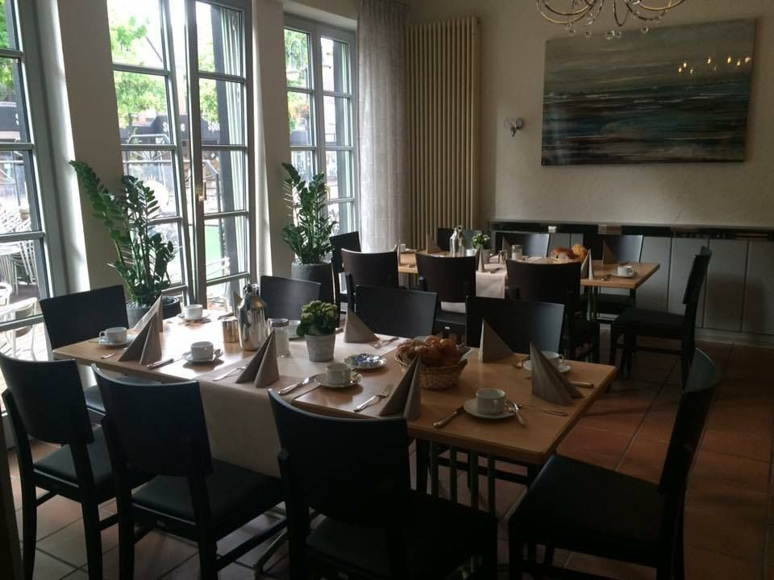
Restaurant
Internationale Küche, im Sommer auch draußen auf der Terrasse am Brunnen.
Zur Speisekarte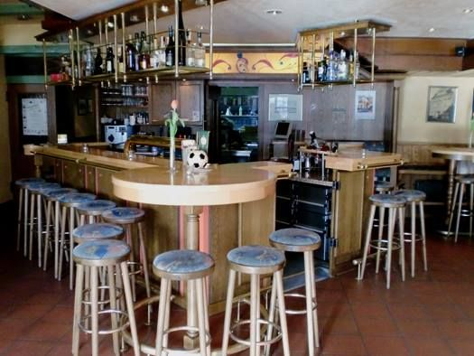
Kneipe
Dienstag bis Sonntag ab 16:30 Uhr, bis spät in den Abend.
So finden Sie uns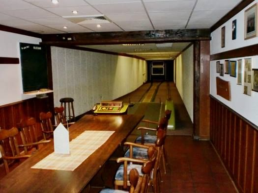
Bundeskegelbahnen
Für Kegelclubs, Betriebsausflüge und den Abend mit Freunden.
Bahn reservieren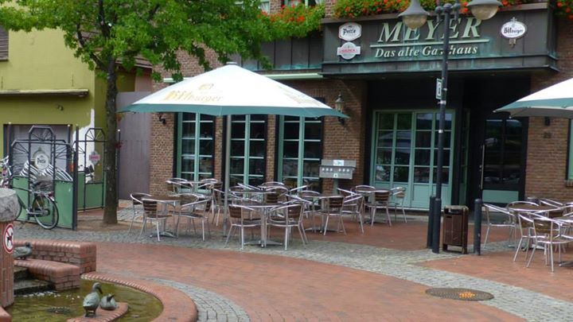
Außenterrasse
Mitten in der Fußgängerzone, direkt am Brunnen.
AnfahrtFeiern und Kegeln bei Meyer
Schreiben Sie uns kurz, was Sie vorhaben. Wir melden uns mit einem Vorschlag bei Ihnen.
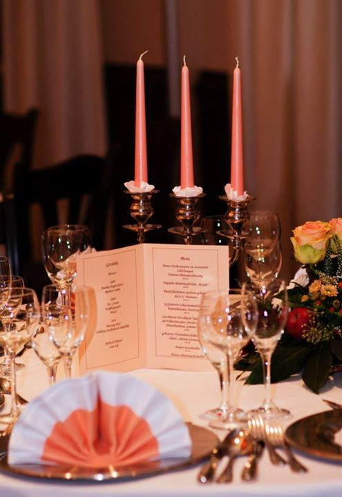
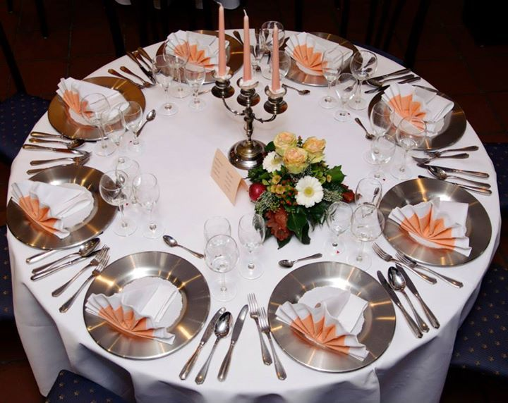
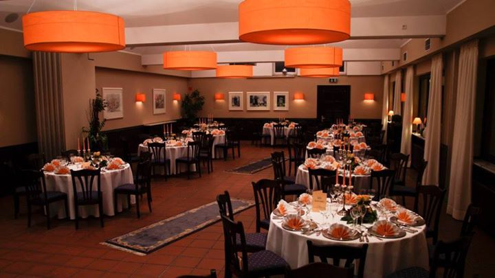
- 180Gäste passen in den Saal.
- 1924bauten Heinrich und Anna Meyer den großen Festsaal. Hier feierten die Eper Schützenvereine.
Speisekarte und Termine
Was es gerade zu essen gibt und was als Nächstes ansteht, auf einen Blick und immer aktuell.
Speisen + Getränke
Platzhalter im Entwurf
Ihre Karte
Saison und Feiertage
Termine
Platzhalter im Entwurf
Ihr nächster Terminzum Beispiel ein Themenabend oder ein Feiertagsmenü
Ihr nächster Terminzum Beispiel ein Fest in Epe, bei dem Sie dabei sind
Ihr nächster Terminzum Beispiel Ruhetage oder Betriebsferien
Hinweis im Entwurf: Speisekarte und Termine trage ich auf Wunsch ein und halte sie aktuell. Ein Foto der Karte oder eine kurze Nachricht reicht. Leon Oßendorf
Uralte Gastlichkeit, neun Generationen
Das Alte Gasthaus Meyer ist schon seit 1660 eine feste Größe in Epe. Schon davor betrieb die Familie, die damals noch Meyers hieß, wohl ein Gasthaus. Die Aufzeichnungen darüber gingen in den Wirren des Dreißigjährigen Krieges verloren.
- 1660erste Urkunde
Wilhelmy Meyers
Der erste urkundlich erwähnte Besitzer.
- um 1700Ende 17. Jh. geboren
Henrici Meyers
Übergab den Betrieb an die nächste Generation.
- 1728geboren
Joanis Bernardus Meyers
Die Meyers lebten noch von der Landwirtschaft und dem (Kolonial-)Handel. Die Gastwirtschaft war Nebenerwerb.
- 1764geboren
Engelbert Meyers
Übernahm als erster „Meyer“ ohne „s“. Das Gasthaus war schon damals sehr beliebt.
- 1792geboren
Bernhard-Heinrich Meyer
In den Annalen von Epe als „Kleinhändler, Wirt und Bote“ geführt. Daher kam der Beiname „Bourden“, den die Meyers bis Ende des 19. Jahrhunderts trugen.
- 1845geboren
Hermann Meyer
Führte neben der Gastwirtschaft ein Malermeistergeschäft.
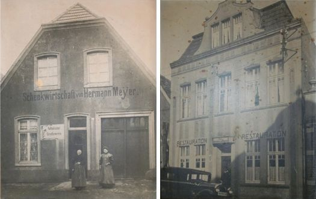
Das frühere Gasthaus, aus dem Familienalbum - 1924der große Festsaal
Heinrich und Anna Meyer
Bauten den großen Festsaal für 500 Personen. Bis zum Zweiten Weltkrieg feierten hier alle Eper Schützenvereine, und sämtliche Vereine in Epe hatten hier ihre Geburtsstunde.
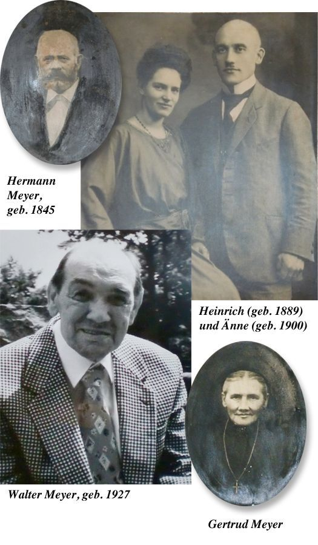
Porträts aus der Familiengeschichte - 1983Neubau
Walter und Ingrid Meyer
Im Zuge der Ortskernsanierung musste das Gasthaus dem Kardinal-von-Galen-Ring weichen. Walter und Ingrid Meyer bauten es am heutigen Standort neu auf.
- 1989Übernahme
Achim und Astrid Meyer
Achim Meyer übernahm nach seiner Ausbildung als Koch den elterlichen Betrieb, tatkräftig unterstützt von seiner Frau Astrid. Und die zehnte Generation wächst schon mit dem Haus auf.
- Heute
Ihr Gasthaus am Brunnen
Restaurant, Saal, Kneipe und Bundeskegelbahnen, weit über Epes Grenzen hinaus bekannt.
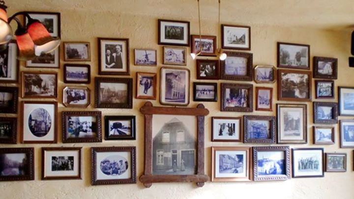
Erinnerungen an der Wand
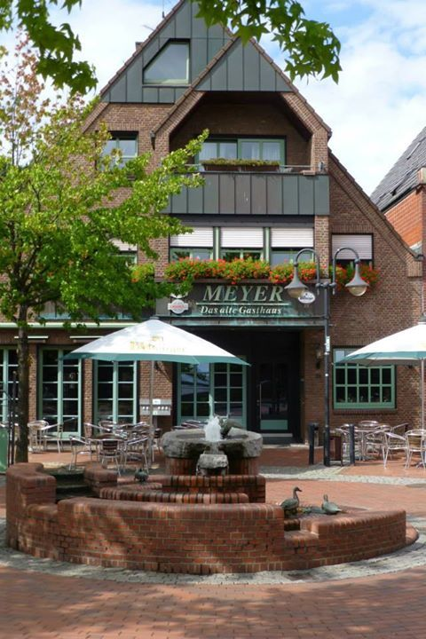
Besuchen Sie uns
Altes Gasthaus Meyer
Merschstraße 24
48599 Gronau-Epe
Mitten in der Fußgängerzone am Brunnen.
Öffnungszeiten
Dienstag bis Sonntag
16:30 bis 1:00 Uhr
Oder per E-Mail: altesgasthaus-meyer@t-online.de